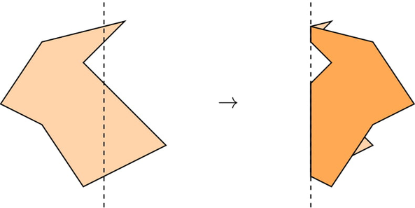
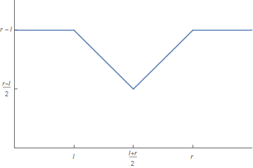
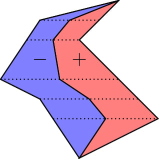

有一张形状为多边形的纸，这个多边形有 $n$ 个顶点，且满足如下性质：任何一条水平的直线与该多边形的边界至多交于两个点。
现在我们将这张纸沿着竖直直线 $x = f$ 对折，那么所得的最终图形的面积是多少呢？这里假设对折时，是将多边形位于该直线左侧的部分沿 $x = f$ 反射后覆盖到其右侧的部分上，如图所示：
你需要回答 $q$ 个询问，其中的 $f$ 分别等于 $f_1, f_2, \cdots, f_q$。
第一行包含两个正整数 $n, q$ ($3 \leq n \leq 10^5; 1 \leq q \leq 10^5$)，分别表示多边形的点数和询问的个数。
接下来 $n$ 行，每行两个整数 $x_i, y_i$ ($-10^5 \leq x_i, y_i \leq 10^5$)，依次描述多边形的每个顶点的坐标。保证相邻两点以及首尾之间一定有线段相连，保证多边形满足题目描述中所述性质。
接下来 $q$ 行，每行一个正整数 $f_i$ ($\min\limits_{1 \leq j \leq n} x_j \leq f_i \leq \max\limits_{1 \leq j \leq n} x_j$)，描述一组询问，表示询问沿直线 $x = f_i$ 对折后最终图形的面积。保证所有 $f_i$ 互不相同。
对于每组询问，输出一行一个实数 $A_i$，表示沿直线 $x = f_i$ 后最终图形的面积。答案被认为正确当且仅当相对或绝对误差不超过 $10^{-4}$。
首先，考虑单组询问的情形。
由题目中的性质，保证了对于任意直线 $l : y = y_0$，多边形与 $l$ 的交是一条线段，因此对折后仍为线段 (即对折后的 "多边形" 仍满足此性质)。
那么，由基本的积分思想 (祖暅原理)，设直线 $l : y = y_0$ 交多边形所截得的线段长为 $w \left( y_0 \right)$，则图形的面积就等于 $$ \int_m^M w \left( y \right) \mathrm d y $$ (其中 $m = \min\limits_{1 \leq i \leq n} y_i, M = \max\limits_{1 \leq i \leq n} y_i$)
因此只需考虑沿直线 $x = f_i$ 对折后函数 $w$ 的变化即可。
现在我们考虑固定 $y_0$，设原来截得的线段为 $y = y_0 \left( l \leq x \leq r \right)$。
经过讨论可知，沿直线 $x = f_i$ 后新的 $w$ 函数满足：$$ w \left( x \right) = \begin{cases} r - l & x < l \\ r - x & l \leq x < \dfrac {l + r} 2 \\ x - l & \dfrac {l + r} 2 \leq x < r \\ r - l & x \geq r \end{cases} $$ (图像如下图所示)
将其求导，我们也可以理解为，对于线段 $\left[ l, r \right]$，我们将其切割成左右两段 ($\left[ l, \dfrac {l + r} 2 \right]$ 和 $\left[ \dfrac {l + r} 2, r \right]$) 后，左边的一段会产生负的贡献，右边的一段会产生正的贡献。这样新的 $w$ 函数就等于原先的 $w$ 函数加上位于 $x = f_i$ 左侧的线段的带权长度。
然后按照上述结论进行积分，即可得到：
我们沿着 "中轴线" 将原多边形分成两个部分 ("中轴线" 上的点 $P$ 满足 $P$ 是过 $P$ 的水平直线截原多边形所得的线段的中点，见下图)，然后左半边的权值看成负数，右半边的权值看成正数，那么答案就等于原多边形面积减去直线 $x = f_i$ 左侧的带权面积。
这个分割可以通过类似归并排序 (双指针) 的方法在 $O \left( n \right)$ 时间内完成。
现在考虑求解多组询问的情形。
首先对询问离线并按照 $f_i$ 排序，而正负面积显然又可以分开计算，于是只需考虑很多平行于 $y$ 轴的直线截一个多边形，求多边形位于该直线左侧部分的面积。
这是一个经典的扫描线问题，只需注意到面积是关于横坐标 $x$ 的分段二次函数，因此只需要在扫描线的事件中计算整个二次函数的增量即可 (或者也可以通过梯形 + 容斥原理来理解)。
时间复杂度 $O \left( \left( n + q \right) \log \left( n + q \right) \right)$。
#include <bits/stdc++.h>
using std::cin;
using std::cout;
typedef std::pair <double, int> pr;
const double eps = 1e-10;
const int N = 200054;
struct vec2 {
double x, y;
vec2 (double x0 = 0.0, double y0 = 0.0) : x(x0), y(y0) {}
inline friend std::istream & operator >> (std::istream &in, vec2 &B) {return in >> B.x >> B.y;}
inline double operator ^ (const vec2 &B) const {return x * B.y - y * B.x;}
} poly[N], l[N], m[N], r[N];
struct sweepLine {
double x, a, b, c;
sweepLine () {}
sweepLine (double x_, double a_, double b_, double c_) : x(x_), a(a_), b(b_), c(c_) {}
inline bool operator < (const sweepLine &B) const {return x < B.x;}
} sl[2003731];
int n, q, L, M, R;
double ansL[N], ansR[N];
pr qry[N];
inline double getX(const vec2 &P, const vec2 &Q, double y) {return ((Q.x - P.x) * y + (P ^ Q)) / (Q.y - P.y);}
void sweepTo(int L, vec2 *l, int R, vec2 *r, double *ans) {
int i, j, cnt = 0; double dx, dy, k, A = 0., B = 0., C = 0.;
for (i = 1; i < L; ++i) {
dx = l[i].x - l[i - 1].x, dy = l[i].y - l[i - 1].y;
if (fabs(dx) < eps)
dx = (l[i - 1].x + l[i].x) * .5,
sl[cnt++] = sweepLine(dx, 0., dy, -dy * dx);
else if (dx > 0)
k = .5 * dy / dx,
sl[cnt++] = sweepLine(l[i - 1].x, k, -2. * k * l[i - 1].x, k * l[i - 1].x * l[i - 1].x),
sl[cnt++] = sweepLine(l[i].x, -k, 2. * k * l[i].x, -k * l[i].x * l[i].x);
else
k = -.5 * dy / dx,
sl[cnt++] = sweepLine(l[i].x, k, -2. * k * l[i].x, k * l[i].x * l[i].x),
sl[cnt++] = sweepLine(l[i - 1].x, -k, 2. * k * l[i - 1].x, -k * l[i - 1].x * l[i - 1].x);
}
for (i = 1; i < R; ++i) {
dx = r[i].x - r[i - 1].x, dy = r[i].y - r[i - 1].y;
if (fabs(dx) < eps)
dx = (r[i - 1].x + r[i].x) * .5,
sl[cnt++] = sweepLine(dx, 0., -dy, dy * dx);
else if (dx > 0)
k = .5 * dy / dx,
sl[cnt++] = sweepLine(r[i - 1].x, -k, 2. * k * r[i - 1].x, -k * r[i - 1].x * r[i - 1].x),
sl[cnt++] = sweepLine(r[i].x, k, -2. * k * r[i].x, k * r[i].x * r[i].x);
else
k = -.5 * dy / dx,
sl[cnt++] = sweepLine(r[i].x, -k, 2. * k * r[i].x, -k * r[i].x * r[i].x),
sl[cnt++] = sweepLine(r[i - 1].x, k, -2. * k * r[i - 1].x, k * r[i - 1].x * r[i - 1].x);
}
std::sort(sl, sl + cnt);
for (j = i = 0; i < cnt; ++i) {
for (; j < q && qry[j].first <= sl[i].x; ++j) ans[qry[j].second] = (A * qry[j].first + B) * qry[j].first + C;
A += sl[i].a, B += sl[i].b, C += sl[i].c;
}
for (; j < q; ++j) ans[qry[j].second] = C;
}
int main() {
int i, j; double x, A = 0;
std::ios::sync_with_stdio(false), cin.tie(NULL);
cin >> n >> q;
for (i = 0; i < n; ++i) cin >> poly[i];
for (j = 0, i = 1; i < n; ++i) if (poly[i].y < poly[j].y) j = i;
std::rotate(poly, poly + j, poly + n), poly[n] = *poly;
for (j = 0, i = 1; i < n; ++i) if (poly[i].y > poly[j].y) j = i;
for (i = 0; i < n; ++i) A += poly[i] ^ poly[i + 1];
if (A < 0) A = -A, std::reverse(poly + 1, poly + n), j = n - j;
L = n - j + 1, std::reverse_copy(poly + j, poly + (n + 1), l),
R = j + 1, memcpy(r, poly, R * sizeof(vec2)), A *= .5;
m[M++] = *poly;
for (i = j = 1; i < L || j < R; )
if (j != R && i != L && l[i].y == r[j].y)
m[M++] = vec2((l[i].x + r[j].x) * .5, l[i].y), ++i, ++j;
else if (j == R || (i != L && l[i].y < r[j].y))
m[M++] = vec2((l[i].x + getX(r[j - 1], r[j], l[i].y)) * .5, l[i].y), ++i;
else
m[M++] = vec2((getX(l[i - 1], l[i], r[j].y) + r[j].x) * .5, r[j].y), ++j;
for (i = 0; i < q; ++i) cin >> x, qry[i] = pr(x, i);
std::sort(qry, qry + q), cout.precision(12),
sweepTo(L, l, M, m, ansL), sweepTo(M, m, R, r, ansR);
for (i = 0; i < q; ++i) cout << A - ansL[i] + ansR[i] << '\n';
return 0;
}
坑1：注意题目中并没有说明多边形以什么方向给出，因此需要手动判定是 "逆时针" 还是 "顺时针" (如通过有向面积的正负来判定)。
坑2：在计算二次函数的增量时注意正负号以及乘除 $2$ 等，不要漏算了。